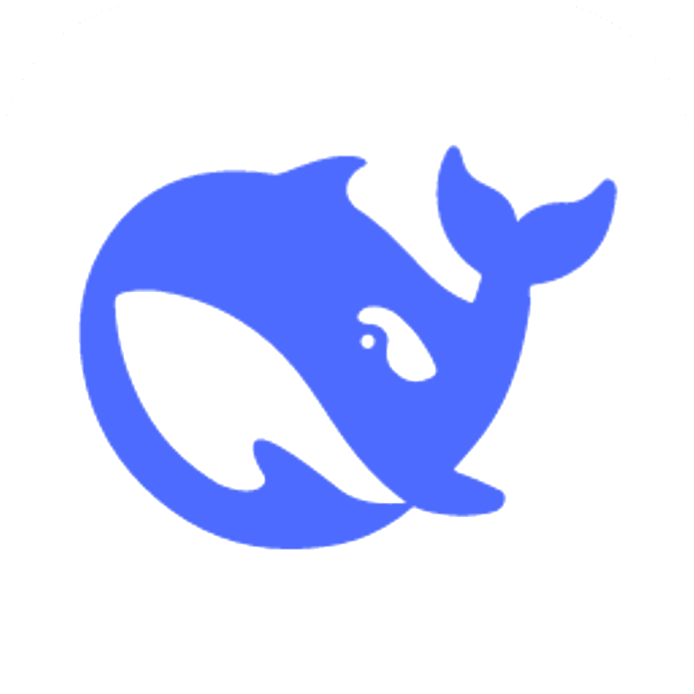

01 · 空态
玻璃底托 Glass Plinth
Logo 放进一块磨砂玻璃里；标题上方加一行极小字距的 eyebrow；模式选择器与建议 chips 都是半透明玻璃。

DeepSeek · AI Assistant
你好，DeepSeek
今天想聊点什么？
快速模式
专家模式
适合日常对话，即时响应
帮我润色一段文案
解释这段代码
规划一个周末
发消息或按住说话
深度思考
智能搜索
high
02 · 对话
全圆角玻璃 Rounded Glass
用户气泡改全圆角（右下角也是 20px），磨砂底 + 白色内高光；思考胶囊同样玻璃化，正文直接落在背景上。
帮我把这段产品介绍写得更打动人一些。
DeepSeek
已深度思考（用时 8 秒）
当然可以。原文信息很完整，但偏重功能罗列。下面这版把重心放回「用户能感受到的变化」：
- 开头先给结论，让读者 3 秒知道它解决什么问题
- 用「少做一步」代替「自动化」，把功能翻译成体感
- 结尾收在一个具体动作上：今天就试试
语气再轻松一点，像在跟朋友聊天。
继续追问
深度思考
智能搜索
03 · 历史
磨砂面板 Frosted Panel
整块抽屉是磨砂玻璃，背后的主页光斑被模糊成底色；选中行用玻璃高光 + 渐变指示条收边。
搜索对话内容...
今天6 个对话
产品介绍优化
Flutter 图片压缩方案
周末去杭州怎么玩
帮我解释一下这段报错
SQL 索引优化
外卖店铺文案
昨天3 个对话
Kotlin 协程是什么
给妈妈写一段生日祝福
读《人类简史》的笔记整理
DeepSeek API Key
sk-8******f已连接